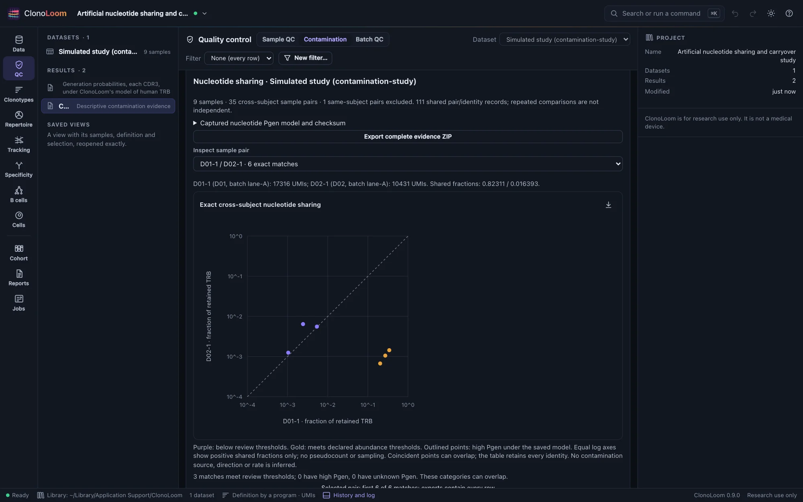
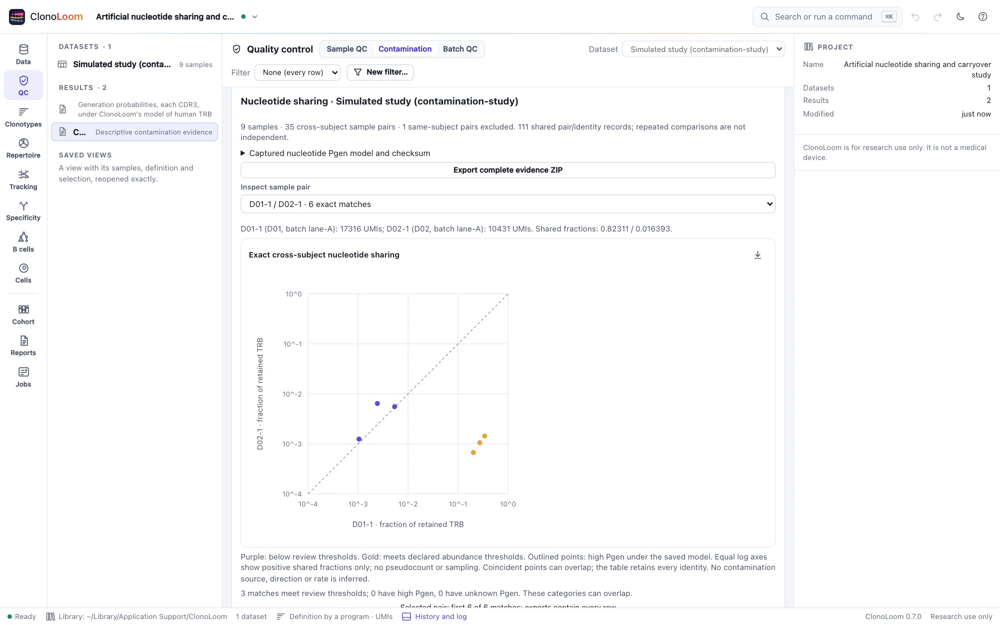

Contamination evidence
Shared receptors can reflect biology or laboratory artifacts. Inspect the complete evidence and sampling context; a flag is a reason to investigate, never proof of contamination.
Declare the comparison
- Open one dataset of human bulk TRB samples with known integer read, UMI or template counts. Choose the intended QC filter.
- Open QC → Contamination. Expand Declare samples and review thresholds. Assign each selected sample to a named subject and optionally a batch. Repeated observations of one person use the same ID.
- Confirm that the subjects are human and that distinct IDs represent unrelated subjects. Transplantation, cell therapies and shared exposures need separate interpretation.
- Declare count, fraction, asymmetry and optional Pgen thresholds, then select Screen contamination evidence.
The screen uses its own fixed productive TRB definition: exact full nucleotide junction plus resolved V and J genes. The project definition is unchanged. Different synonymous junctions never match. Ambiguous genes or missing/nonstandard junctions remain excluded with reasons. Single-cell, nonhuman, sequence-only and B-cell workflows are outside this bounded implementation.
Read the evidence


Each point is an exact nucleotide/V/J identity observed positively in both selected samples. Fractions divide by each sample’s entire retained productive TRB abundance, including rows whose sequence or genes could not be matched. Both axes have identical logarithmic limits and equal scales; the diagonal means equal fractions. There are no pseudocounts, fitted lines or sampled subsets. Coincident points may overlap; the table and exports retain every identity.
Purple points fall below the declared abundance thresholds; gold points meet them. Open circles independently identify high nucleotide Pgen under the saved model. The two labels can overlap. Inspect complete pair summaries, sample depths and exclusion reasons. A zero denominator or no eligible identities gives unavailable evidence; an evaluable pair with no matches has observed zero sharing.
Heuristics, not verdicts
Defaults mark a match for review when both counts are at least 2 and the larger fraction is at least 0.01. A marked match is labeled asymmetric when the ratio of larger to smaller fraction is at least 20; otherwise it is shared high abundance. These are editable ClonoLoom review choices, not calibrated contamination cutoffs, p-values or reasons to delete sequences. Changing thresholds does not remove matches or alter denominators.
Same-subject sample pairs are excluded. All other unordered pairs remain, and repeated pair comparisons are dependent. Unequal depths, QC, annotation errors and incomplete sequence evidence affect detection. The screen reports coverage of retained evidence, not unseen repertoire coverage or a depth-standardized contamination rate. Different IDs do not establish subject independence.
Keep publicness context separate
Optionally select a saved human nucleotide Pgen result from the same dataset and QC. To create a compatible parent, use a clonotype definition with one TRB chain, nucleotide junctions, V/J genes and productive-only records, then use Specificity → Generation. Choose the model explicitly. Its name, checksum, source and joint-V/J setting travel with the screen; no model is downloaded automatically.
The default high-NT-Pgen threshold is 1e-8, a contextual choice under that model. AA probabilities are not substituted. Missing Pgen is unknown; model zero is not biological impossibility. High Pgen offers a plausible publicness explanation and does not suppress review flags. Low Pgen cannot prove contamination, and high Pgen cannot clear a sample.
Shared expansion, common exposures, relatedness, transplantation and cell therapies can produce overlap, as can carryover, index misassignment or mislabeled samples. Batch annotations are contextual. No source, direction, mechanism or rate is inferred, and no automatic decontamination is performed. This is not the TCR-Broom Bayesian classifier.
Try the controlled study
Choose Cross-subject nucleotide sharing study from Examples. Use truth/samples.json for the eight subjects, nine samples and two batches. D01 has a repeat; it must not count as cross-subject evidence. The full result has 35 eligible sample pairs and 111 shared pair/identity records. Source sequences use ClonoLoom’s length-selected TRB simulation model, with uneven shifted gamma-Poisson counts, designated shared controls, three planted transfers and a synonymous control. Generating labels are assumptions for validation, not computed Pgen labels or biological discoveries.
Keep and reproduce the screen
The result captures sample assignments, all eligible counts, denominator/exclusion evidence, fixed definition, QC, source hashes, thresholds and optional Pgen context. Reopening and replay work without source files or the Pgen parent. Export complete evidence ZIP includes JSON, manifest, samples, every pair and every shared match, plus provider notices. It contains subject IDs and nucleotide sequences. Figure exports carry methods and citations. Remote clients use screen_contamination.
Bounds are 64 selected samples, 5000 eligible identities and 200,000 shared pair/identity records. Larger screens are refused, not truncated. More than 2000 matches in one pair use complete tables/exports instead of a plotted subset.
Scientific sources
- AIRR Community (2022). Guide to Planning and Performing AIRR-Seq Experiments. Laboratory and sharing context.
- Li et al. (2023). A novel statistical method for decontaminating T-cell receptor sequencing data. Related statistical work; its classifier is not implemented here.
- Sethna et al. (2019). OLGA. Generation-probability context, separate from observed sharing.